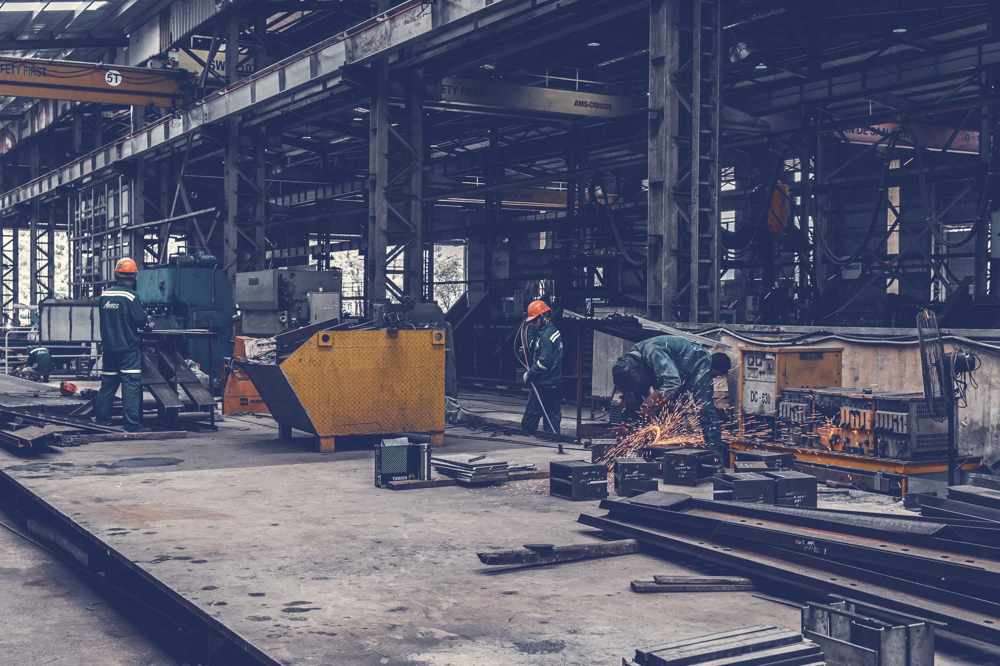
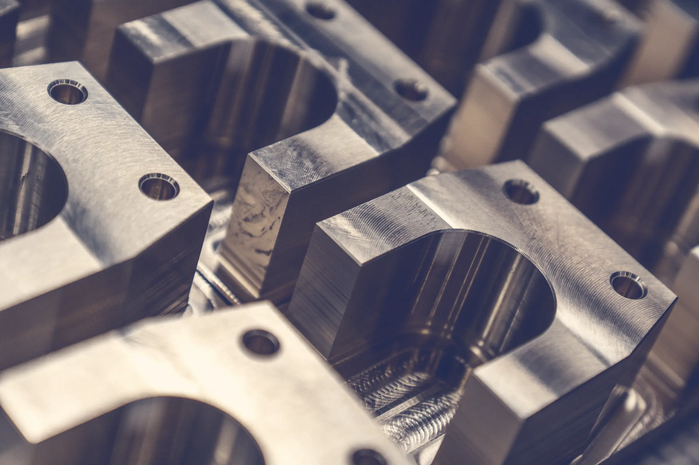
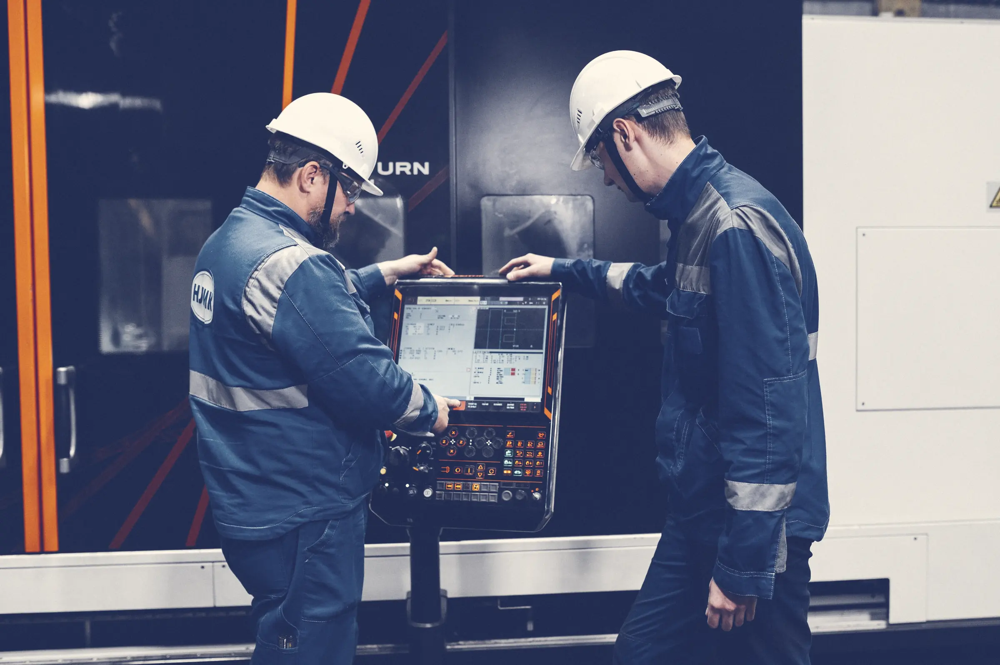
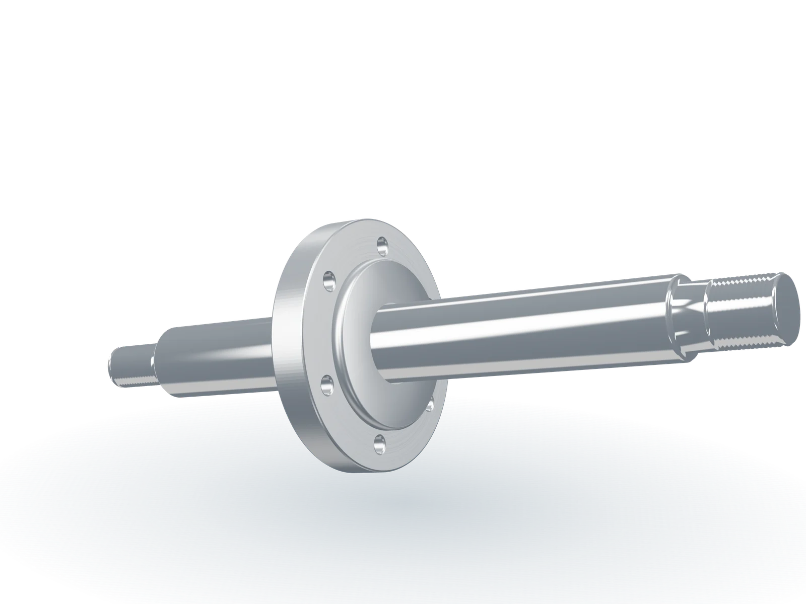
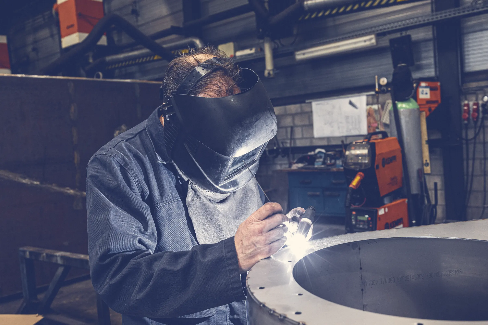
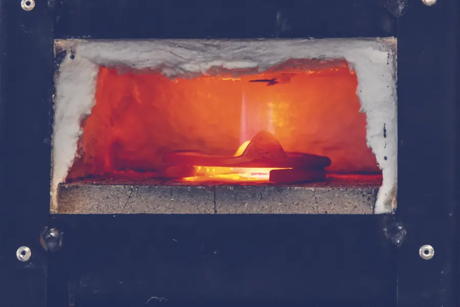
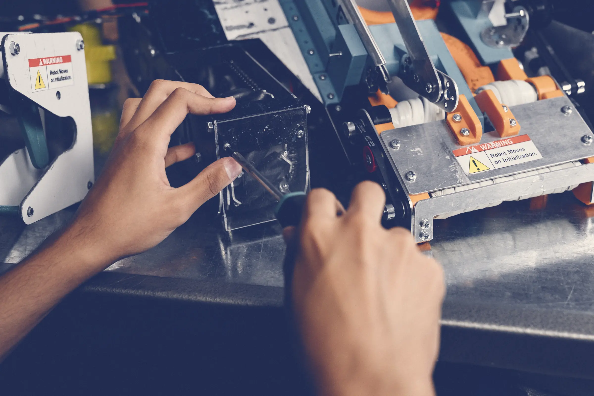

Výroba
Obrábíme, svařujeme a kompletujeme podle vaší dokumentace v jedné hale. Povrchové úpravy zajistí ověření partneři do 40 km, díl tak dostanete hotový.


Frézování
Na pětiosých centrech obrobíme díl z více stran na jedno upnutí. Vzájemná poloha děr a ploch tak drží i u složitých skříní. Hermle s paletovým zásobníkem obrábí série přes noc bez obsluhy.
- Osy
- 3 až 5
- Max. obrobek
- 1 270 × 610 × 720 mm
- Přesnost
- ±0,01 mm, na přání ±0,005 mm
Typicky skříně převodovek, upínací desky, příruby a tvarové díly z hliníku.

Soustružení
Hřídele, pouzdra, čepy a příruby z tyčí i přířezů. Soustruhy s poháněnými nástroji, osou Y a protivřetenem udělají díl včetně frézovaných ploch a příčných děr, takže nemusí na další stroj.
- Max. průměr
- Ø 430 mm
- Max. délka
- 1 100 mm
- Z tyče
- do Ø 65 mm s podavačem
Typicky pístnice, hřídele převodovek, pouzdra ložisek a těsnicí víka.

Broušení na kulato
Uložení ložisek, těsnicí a kluzné plochy. Brousíme i po kalení a po chromování a drsnost měříme u každého kusu.
- Drsnost
- až Ra 0,2 µm
- Přesnost
- IT5
- Rozsah
- Ø 350 × 1 000 mm
- Stroj
- Studer S33


Svařování
Svařované rámy, konzoly a konstrukce z oceli i nerezu. Po svaření je žíháme a obrábíme na jedno upnutí, takže uložení ložisek a dosedací plochy sedí bez rovnání.
- Metody
- MIG/MAG 135, TIG 141
- Materiály
- S235–S355, 1.4301, 1.4404
- Max. hmotnost
- 2 500 kg
- Certifikace
- EN ISO 3834-2, EN ISO 9606-1
Typicky rámy strojů, nosné konzoly, svařované skříně a nerezové díly pro potravinářství.

Montáž podsestav
Obrobené díly smontujeme, doplníme nakupované komponenty podle vašeho kusovníku a sestavu vyzkoušíme. K vám přijede hotový a vyzkoušený celek s dokumentací.
- Rozsah
- podsestavy do 800 kg
- Nákup
- ložiska, pneumatika, spojovací materiál
- Zkoušky
- funkční zkouška a protokol
Povrchové úpravy
Zajistíme u partnerů do 40 km od Rousínova. Díly vozíme sami a za kvalitu celého dílu odpovídáme my.
- Tepelné zpracování
- kalení, cementování, nitridace
- Hliník
- elox přírodní, černý, tvrdý
- Ocel
- zinek, chemický nikl, černění
- Barvy
- práškové lakování podle RAL
Materiály
Materiál nakupujeme u ověřených hutí a skladů, vždy s inspekčním certifikátem 3.1. Nenašli jste ten svůj? Napište nám.
| Skupina | Příklady | Frézování | Soustružení | Broušení | Svařování |
|---|---|---|---|---|---|
| Konstrukční oceli | S235, S355, C45 | ano | ano | ano | ano |
| Zušlechtěné a cementační | 42CrMo4, 34CrNiMo6, 16MnCr5 | ano | ano | ano | ne |
| Nástrojové oceli | 1.2379, 1.2842 | ano | ano | ano | ne |
| Nerezové oceli | 1.4301, 1.4404, 1.4305 | ano | ano | ano | ano |
| Hliníkové slitiny | EN AW-6082, 7075, 5083 | ano | ano | ne | jen 6082, 5083 |
| Mosaz a bronz | CuZn39Pb3, CuSn12 | ano | ano | ne | ne |
| Technické plasty | POM-C, PA6, PEEK | ano | ano | ne | ne |
Kvalita a dokumentace
Měření
První kus každé série a pak podle kontrolního plánu. 3D měřicí stroj v měrovně se stálou teplotou 20 °C.
Dokumentace
Ke každé dodávce měřicí protokol a inspekční certifikát materiálu 3.1. Na přání protokol prvního vzorku.
Certifikace
Systém řízení kvality ISO 9001:2015 a jakost svařování podle EN ISO 3834-2.